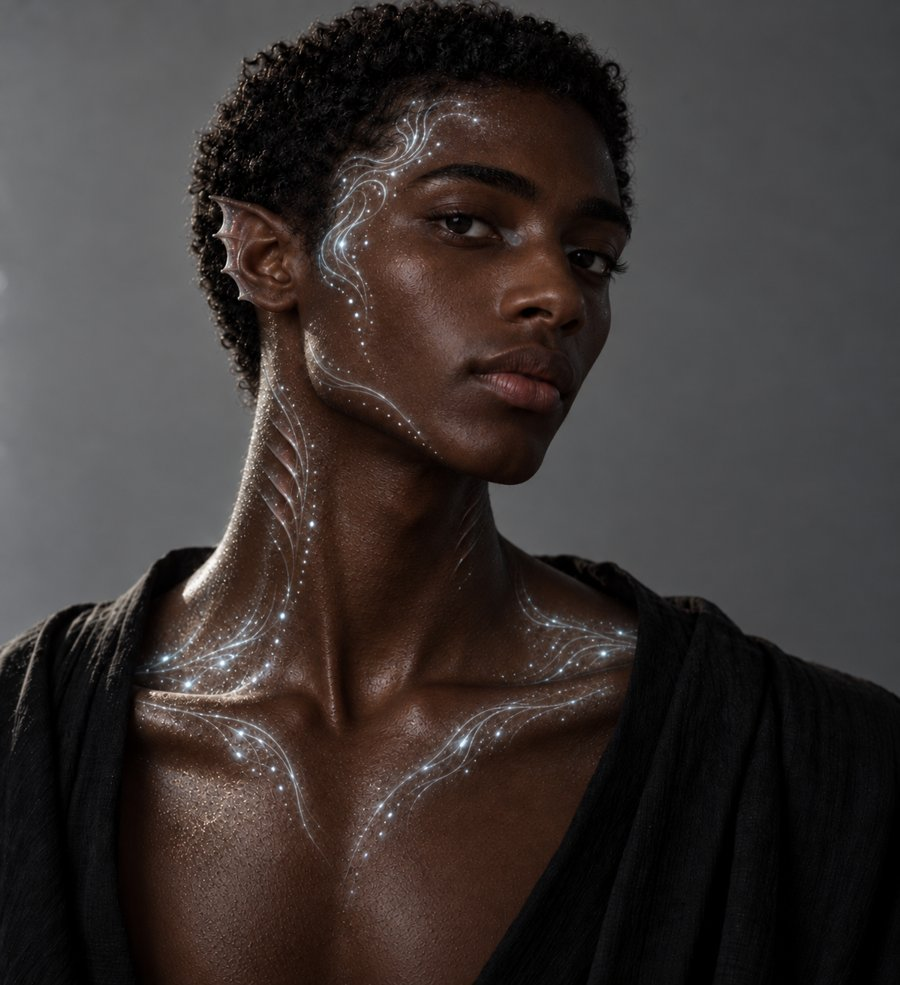
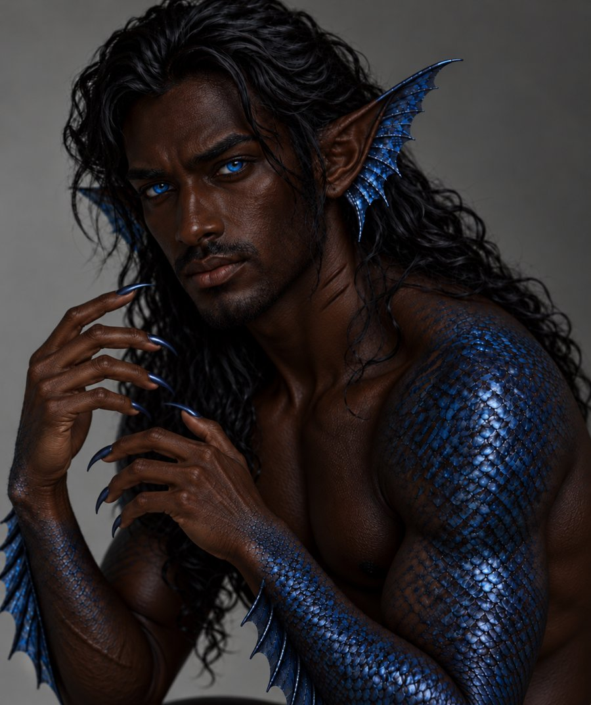
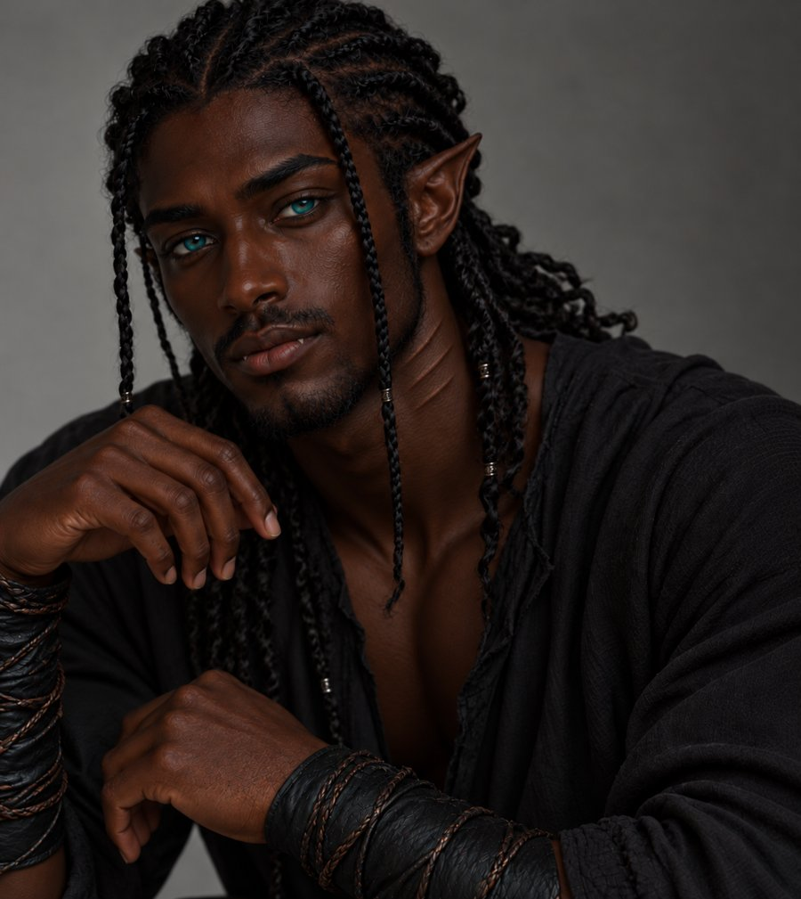
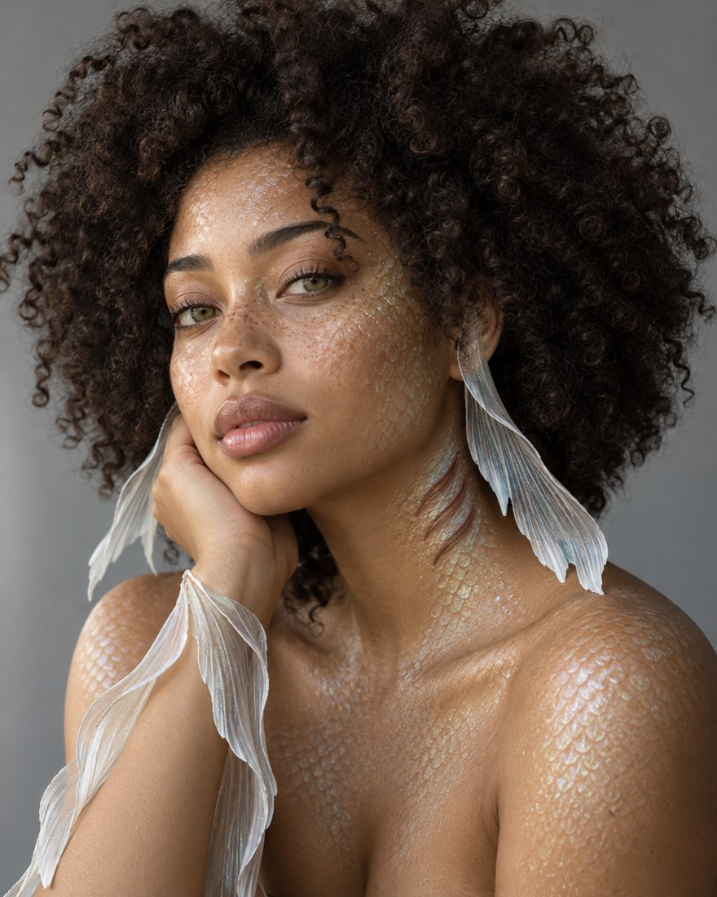

Castes and bodies
Three castes share a body plan and a language. Where they came from, and how long they can stay on land, decides most of what follows.
Lines without a tag are settled canon from the Urhmaiia Canon Reference. Tags mark anything less settled. Terms are given in the keyboard romanisation, with the uvular letter written rh.
| Caste | Meaning | Origin | Children | On land |
|---|---|---|---|---|
| Urhmauuka | Water-born | Made directly by Urhaha, or descended from those who were. | Born intersex. Can have children. | Fully amphibious with no limit. |
| Urhmate | Water-made | Transformed by Dagan, or descended from humans he transformed. Each is melded with a fish species. | First-generation transformed Urhmate cannot. Those born to the caste can. | About 14 hours before madness sets in. Heavier fish traits mean less time. |
| Urhmake | Called back | Human descendants of the Urhmaiia with latent traits. | Can after ocean exposure. | Cannot live out of water after awakening, and must adapt for one to two years submerged. |




Body systems
| System | Urhmauuka | Urhmate | Urhmake |
|---|---|---|---|
| Breathing | Lungs and throat gills, adaptable to air or water. | Mostly gills. Lungs are vestigial. | Human lungs at first. Gills form after awakening. |
| Mind | A resonance cortex, telepathy organs and dream-linked memory. | A neural meshwork with marine structures. | Awakening wakes latent resonance centres. |
| Blood | Iron-rich and pressure-adapted. It may glow with resonance. | Multi-chambered hearts or a slowed pulse for deep pressure. | Shifts from human to ocean-adapted blood under high stress. |
| Voice | A full larynx, a resonance plate and a Haulorai sac for speech, chant and harmonic projection. | No larynx. They speak through cranial clicks, limb resonance and gill pulses. | Voice collapses during change, then develops internal vibration sacs. |
| Digestion | Omnivorous. | Omnivorous. Some deep-caste Urhmate live on resonance, detritus or symbiotic algae. | Rejects land food after the change and adapts to marine food. |
Abilities shared by all
- Telepathy. The main way to speak underwater. It needs touch with non-telepaths, and some humans cannot receive it.
- Haulorai. Uvular call speech for long-distance calls, mourning and mate calls, and soothing animals. It includes clicks and whistles not found in ordinary speech.
- Geomagnetic sense. An inner compass.
- Strong sight. Wide pupils for deep water and a nictitating third eyelid that protects the eye and aids diving.
- Speed. Urhmaiia are the fastest swimmers except for the fastest fish.
- Hearing. On land, the loss of water tension makes sound painfully loud. They must actively block hearing to cope. This is a vulnerability.
- A land gait. A faint bouncing step, like pushing off the seabed. It fades with practice but never quite disappears in the first generation.
Caste-only abilities
- Urhmauuka: Ruala, the magic craft. It covers water control, fish command, invisibility and electrical pulses through fluid. Only Urhmauuka can learn it. They also have healing tears, though most never notice, because tears vanish underwater.
- Urhmate: traits of their fish species, such as scales, fins, glow, chameleon colour or command of that species. They have no full Ruala, but their fish gifts make up for it.
Lifespan and ageing
The model is the Greenland shark: slow to grow, very late to mature, and centuries long. Ruua density matters. Urhmaiia in the undisturbed current of Maubuʁ live measurably longer than those in fringe cities. Heavily fish-featured Urhmate may begin to decline closer to 150. Weaknesses include fire and guns.
| Age | Looks like | Phase |
|---|---|---|
| 0 to 2 | Infant to young child of five or six | Rapid growth: the nameless window |
| 2 to 20 | Child of eight to ten | Slow juvenile |
| 13 to 30 | Changing | The standard Haza window |
| 30 to 60 | Changing | Late Haza, increasingly dangerous after 60 |
| 60 to 150 | Young to mid adult, about 25 to 35 | Prime |
| 150 to 200 | Mature adult, about 40 to 55 | Gradual slowing |
| 200 and up | Visible ageing | The body breaks down |
Sleep
Urhmaiia sleep follows real fish breathing, not land-mammal unconsciousness.
- Buccal pumpers (Urhmauuka and most Urhmake) pump water over their gills with throat muscles and can lie truly still, anchored by an Amailini so they do not drift.
- Ram ventilators (most Urhmate, especially those melded with shark or tuna) must keep moving to breathe. They drift in slow circles while asleep, and the Amailini limits the radius.
- Anyone who knows the biology can tell the two apart at a glance by watching how someone sleeps.
- Unihemispheric sleep is the fallback in open water. One half of the brain rests at a time. It is the least restful.
- True unconscious sleep is possible only in a dry chamber, where the lungs take over. Access to a dry room is a genuine luxury.
Open questions
- A few trait numbers in the physiology draft (gestation, for example) differ between the physiology section and the birth rites. Gestation is given as 6 to 9 months in one and tied to the season in the other. Open